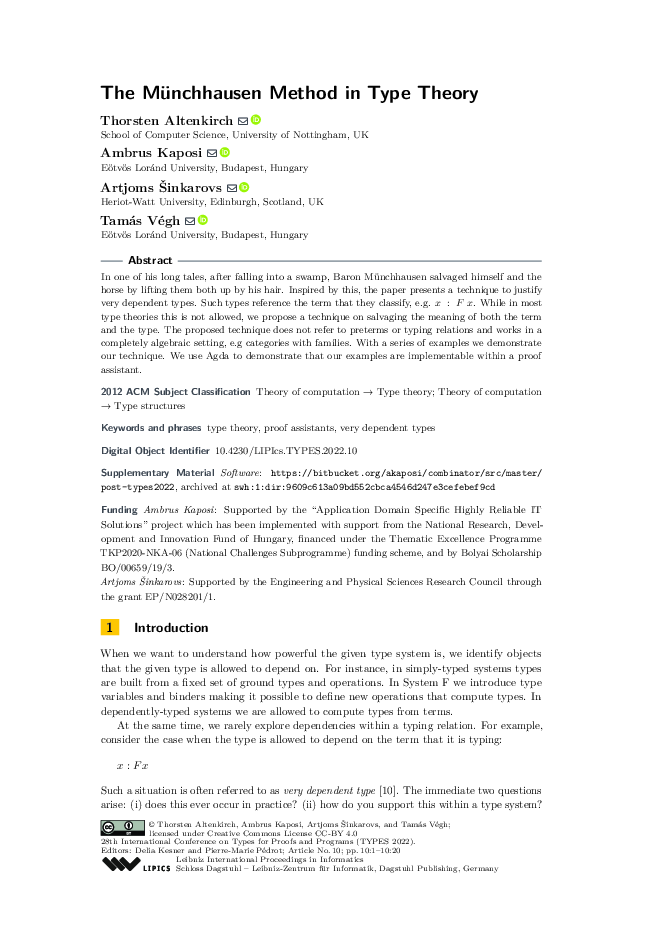

The Münchhausen Method in Type Theory
T. Altenkirch, A. Kaposi, A. Šinkarovs, and T. Végh, “The Münchhausen Method in Type Theory,” in 28th international conference on types for proofs and programs (TYPES 2022), Jul. 2023, vol. 269, pp. 10:1–10:20. doi: 10.4230/LIPIcs.TYPES.2022.10.
Additional Information
The sources of the paper with the code are available here. Here is the official link to the published paper.